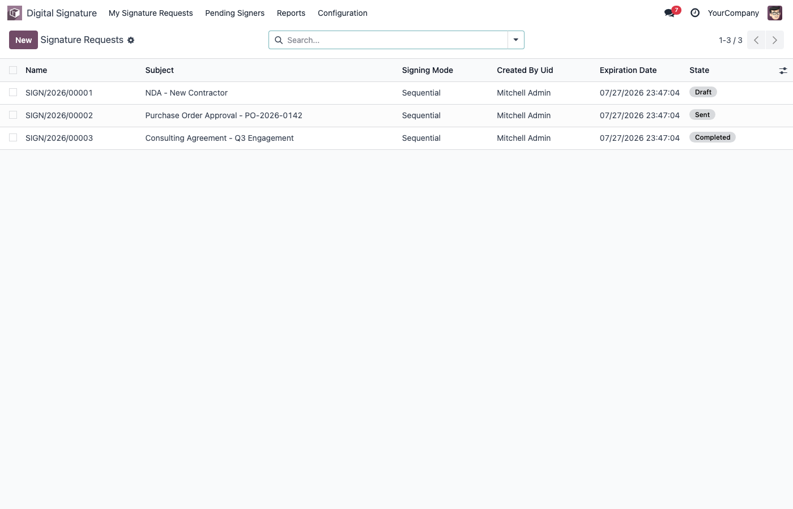
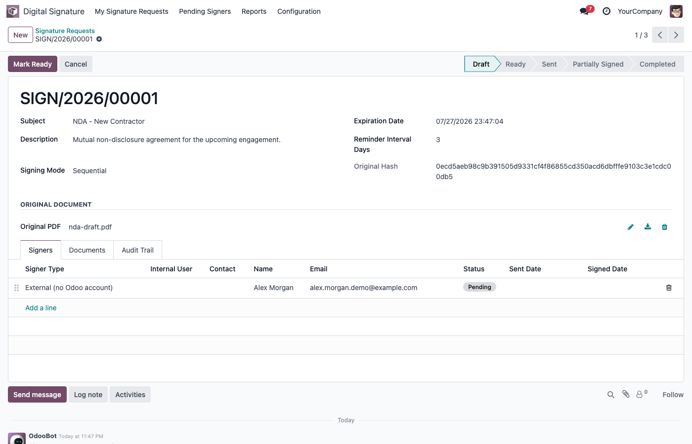
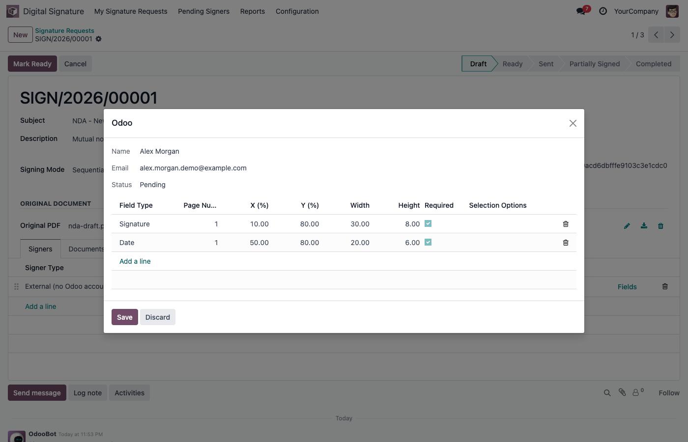
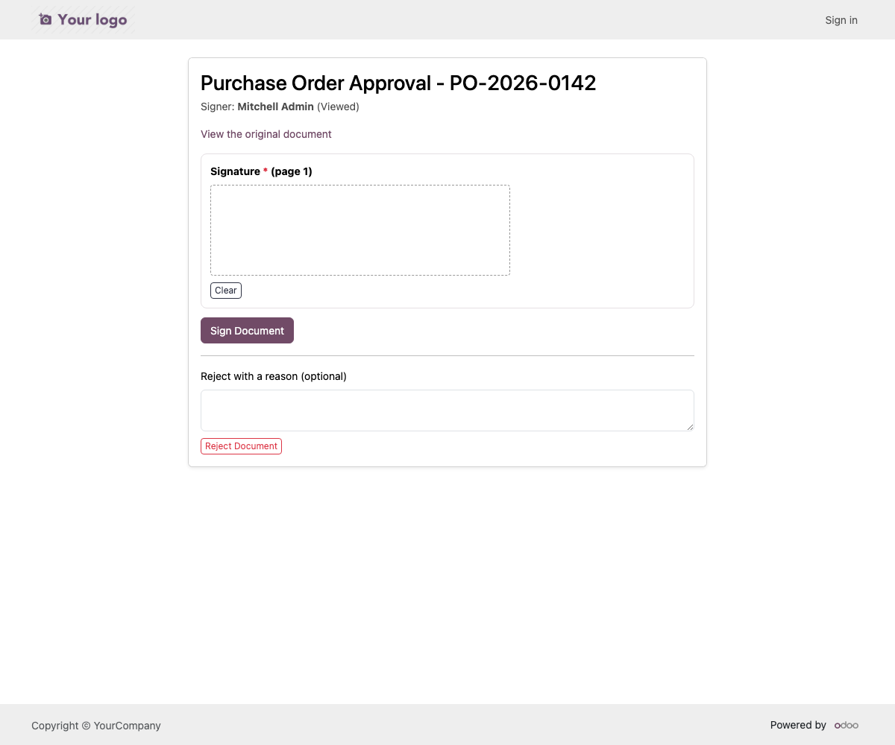
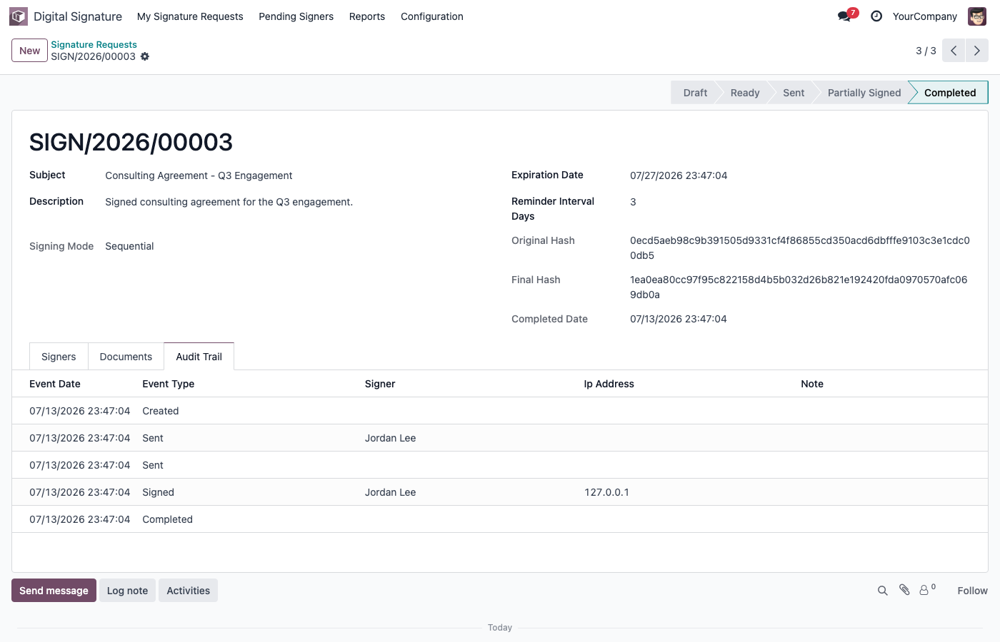
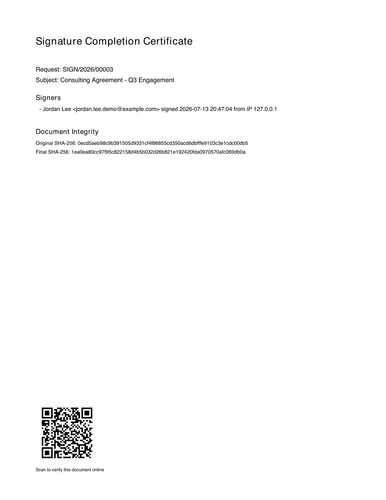
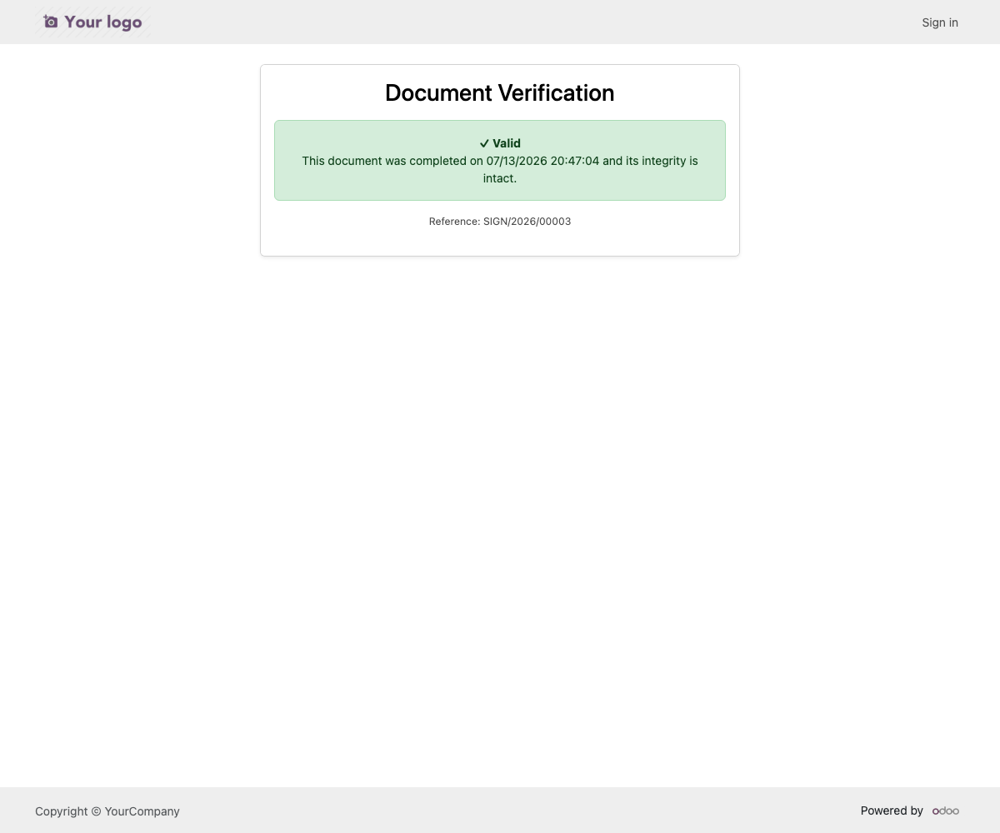

Send PDF documents for sequential or parallel electronic signing, track every action,
generate a completion certificate, and verify signed documents using secure QR codes.
Legal disclaimer: this is an internal electronic signature workflow with an
audit trail and document verification. It does not claim to be a government-certified or
legally-qualified electronic signature service (eIDAS, ESIGN Act, or similar) - it is a
self-hosted document signing workflow you fully control.
Screenshots

Signature requests dashboard

Request builder with signers

Per-signer field placement

Public signer page with signature pad

Immutable audit trail

Completion certificate with QR code

Public, privacy-preserving verification page
Signing workflow
Draft → Ready → Sent → Partially Signed → Completed (or Rejected / Expired / Cancelled).
Sequential signing: signers are notified one at a time, in order.
Parallel signing: every signer is notified at once.
Automatic reminders and expiration, both on configurable schedules.
Field types
Signature, Initials, Name, Date, Text, Checkbox, Selection, Stamp - placed per signer at an exact page/position (percentage-based, so it works at any zoom or paper size).
Security
Every signer gets a cryptographically random, single-purpose token - never the database record id.
Tokens are revoked the instant a request is rejected, cancelled or completed, and cannot be reused.
Field position/definition and the original document are both frozen the moment a request is sent - not even an administrator can change them through the UI afterward.
The audit trail is immutable: no edit or delete is possible through the UI, by anyone.
The public verification page never exposes any signer's name, email or IP address.
No new external Python dependency: PDF generation uses PyPDF2 and reportlab, both already part of core Odoo.
Audit trail
Every view, field fill, signature, rejection, resend, reminder and public verification attempt is logged with a timestamp, IP address and user agent.
Verification
The completion certificate embeds a QR code linking to a public page that confirms the document is valid and shows its completion date - nothing more.
Installation
Copy the module into your addons path and restart Odoo.
Go to Apps, search "Secure Digital Signature Workflow", click Install.
Assign the User group to anyone who should send signature requests, and Manager to anyone who should see every request in the company.
Limitations
Field placement uses page number + X/Y/width/height percentages rather than a drag-and-drop visual designer.
FAQ
Does this require Odoo Enterprise? No, it runs fully on Community.
Does it depend on any other paid app? No, it only depends on standard Odoo modules (base, mail, portal, web).
Is this a legally certified e-signature service? No - see the disclaimer above. It is an internal workflow and audit tool.
Can signers without an Odoo account sign? Yes - external signers only need a name and email; they sign through a personal, single-use link.